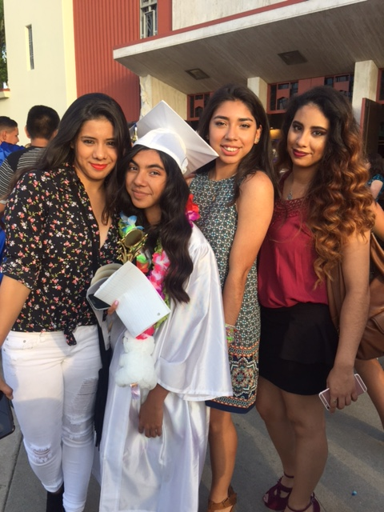

I am 16 years old. I have four sisters who I am very close to. I love everything Disney. My favorite Disney Princess is Snow White.My favorite Disney Channel movie of all time is High School Musical. I have a pretty big family, one that includes Geo. He is technicallly my cousin. I avoid confrontation with people. I really hate the idea of drama. I am a cat person. I would much rather have a cat than a dog.My taste in music is pretty broad. I like a lot of different music, (not teenyboppy music though). I stay in a lot. I am not a big fan of going out. I also keep to myself a lot. I don't really voice my opinion as much as OTHERS. (Cough Cough) Did I mention that Geo is my cousin by marriage? Yup my cousin married his cousin. Keep that in mind.

